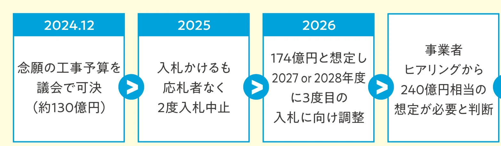
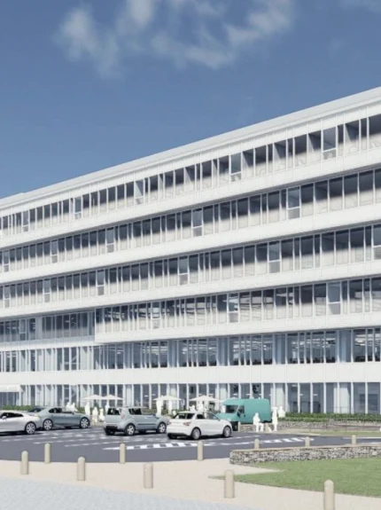
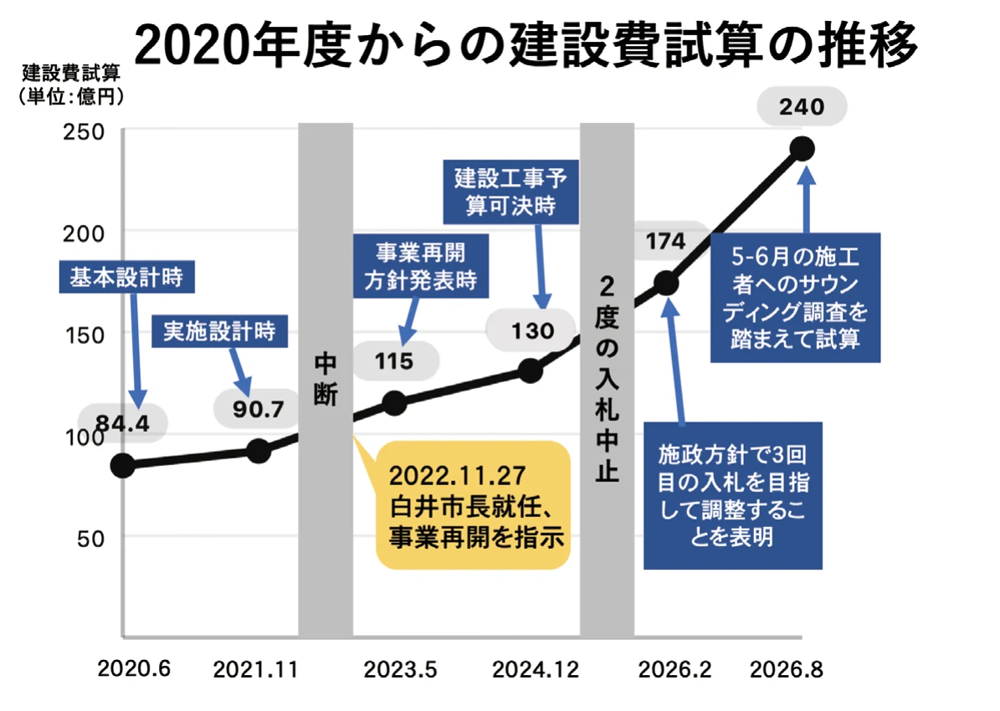
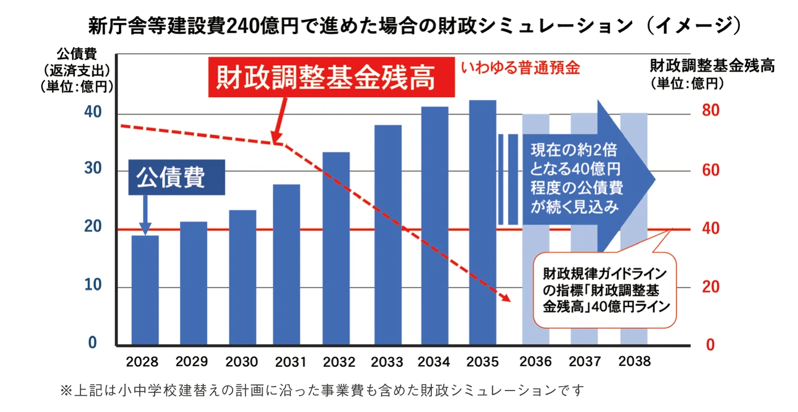
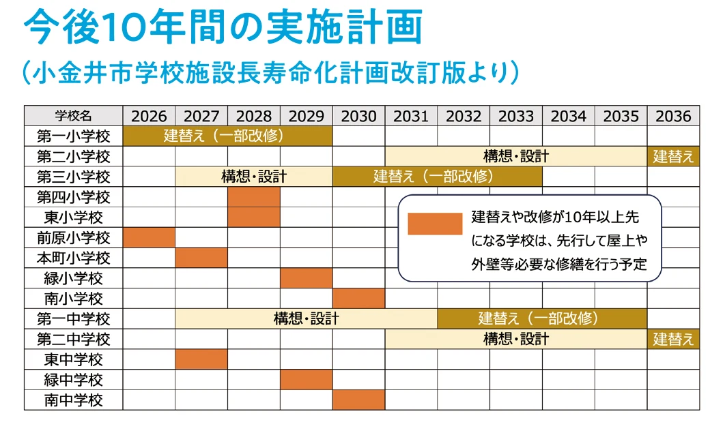

現設計で進めてきたこれまでの経過と見直しの判断について
前市長時代からストップしていた事業を2023年に再開。法令に基づく設計の修正に着手

図を大きく見る建設工事費の大幅な上昇により、小中学校建替え等を始めとした施設の老朽化対策と合わせて非常に大きな財政負担となる見通しとなったことから現設計により進めることは断念、方針を見直すこととしました。
報告
9月1日
新庁舎・（仮称）新福祉会館の今後の対応について（要約）
従来の方針では、2028年度、可能であれば2027年度の入札（及び着工）を目指していました。しかし、2回の入札中止を受け、改めて5月から6月にかけて、施工会社を対象に事前調査を実施したところ、一定の入札参加は見込まれるものの、工事費が240億円相当まで上昇することも想定される結果になりました。新庁舎・（仮称）新福祉会館の建設だけでなく、小中学校施設の建替え等老朽化対策も待ったなしであり、将来の財政負担を見通すと、このままの計画で進めることは困難であると判断。市民参加のもと議会の承認を得てここまで進めてきたなかで、苦渋の決断ではありますが、現設計での建設は断念し、事業規模等を整理し設計をやり直します。9月1日の議会で、その方針を報告しました。

建設費の大幅な高騰、今後の財政運営に危機感
長年の課題であった新庁舎建設は、本庁舎の老朽化と第二庁舎の賃借解消のため統合的な庁舎にし、防災および市民サービスの拠点と位置付けていました。また、約10年前に閉館した福祉会館機能の回復と保健センター等を合わせた福祉の総合拠点と併設する、複合施設として整備を計画。
2019年から設計に入ったものの、財政的な課題や市議会からの指摘等もあり、2022年に実施設計最終盤で立ち止まることに。白井市長就任（2022年11月下旬）後、公約「財政的課題をクリアのうえ、早期建設をめざす」の通り事業再開を決め、市議会にて工事予算を可決するなどして事業を前に進めてきました。しかし、建設物価高騰にあわせ中東情勢の影響も踏まえ、建設費が想定以上に高騰してきました。

図を大きく見る現状のまま進めると、将来的に財政が行き詰まる危険性

図を大きく見る市債（借入）増+金利上昇もあり将来の負担が増大
工事費の大部分を市債発行（借入）することになり、工事費の増額に伴い借入額も増。後20年以上にわたっての返済（償還額）は、金利を含め想定以上に膨らむことになります。
| 建設費想定 | 借入額 | 金利 | 償還額合計 |
|---|---|---|---|
| 130億円の場合 | 約99億円 | 約15億円 | 約114億円 |
| 174億円の場合 | 132億円 | 約33億円 | 約165億円 |
| 240億円の場合 | 187億円 | 約68億円 | 約255億円 |
※240億円の場合はR8.8月段階での金利上昇を含めて試算
小中学校の建替え等も同時に進めなければなりません
現状のままでは、着工から7−8年後から毎年の借入額の返還（公債費）が財政を圧迫し、財政調整基金で補うも基金が枯渇する危険性も想定されます。庁舎等建設とともに、今後の小中学校建替え等の公共施設の更新も深刻な課題であり、両立して取り組まねばなりません。
※グラフや表は市議会への提出資料や議会答弁等から白井とおるサポーターズが独自に作成

図を大きく見る新庁舎等整備は課題解消とまちづくりの観点から重要であり、整理のうえ
早期実現をめざし、新たな方針策定に向け検討を始めています。